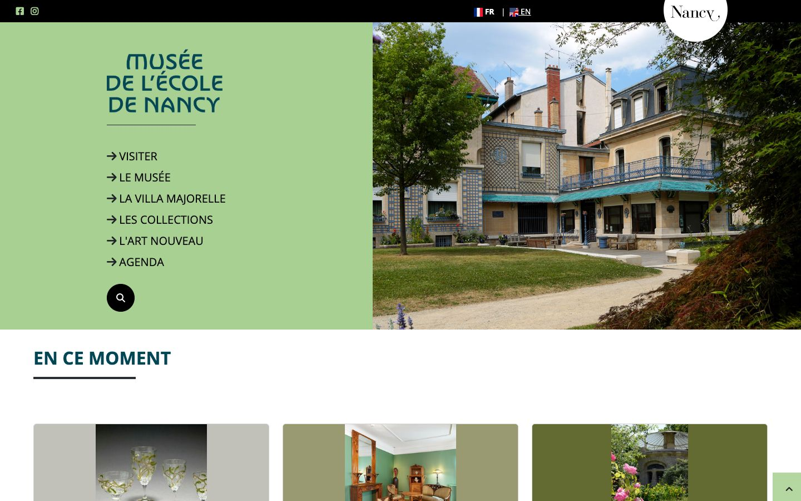

References / Website / 266
Musée de l’École de Nancy website
The Nancy School museum’s site pairs a flared Art Nouveau wordmark with a soft sage-green panel and photographs of Majorelle’s villa and collections.
- Source
- musee-ecole-de-nancy.nancy.fr
- Creator
- Ville de Nancy
- Style
- Art Nouveau (agent-proposed, not yet reviewed by a person)
- Evidence
- Captured with
tools/capture.mjs(headless Chrome, 1440 × 900) on 28 September 2026 and inspected. Nothing covers the page. The request redirected to /accueil. - Reviewed
- Rights
- Third-party work, stored with credit for commentary. License: unverified. Rights policy
Observed
- A sage-green panel fills the left half of the hero. It holds “MUSÉE DE L’ÉCOLE DE NANCY” in dark teal capitals with flared, curving strokes and an unusual M and N.
- Below the wordmark, a thin dark rule and a menu of capitals with arrows in a plain sans-serif.
- The right half is a photograph of the museum building and garden.
- Below, “EN CE MOMENT” in bold teal sans-serif capitals with a short dark rule, and three cards with grey, olive, and dark olive grounds around cropped photographs.
Why it belongs
The wordmark and the green palette are the only style carriers in the page itself; the rest is institutional.
Measured: radius median 0, borders on 28% of boxes, no shadows, one colour family, accent chroma 0.33.
Borrow
Set only the name or the main heading in an Art Nouveau display face, and keep body text plain.
Use sage, olive, and dark olive as a family of card grounds.
Measured
Machine-extracted by tools/extract-traits.js on . Full measurement.
- Type families
- Open_Sans (100%)
- Type scale ratio
- 1.14
- Median radius
- 0 px
- Mean chroma
- 0.1
- Palette
- #ffffff 40%
- #a8d092 40%
- #282d33 11%
- #000000 9%
- #004655 0%
- #555555 0%

